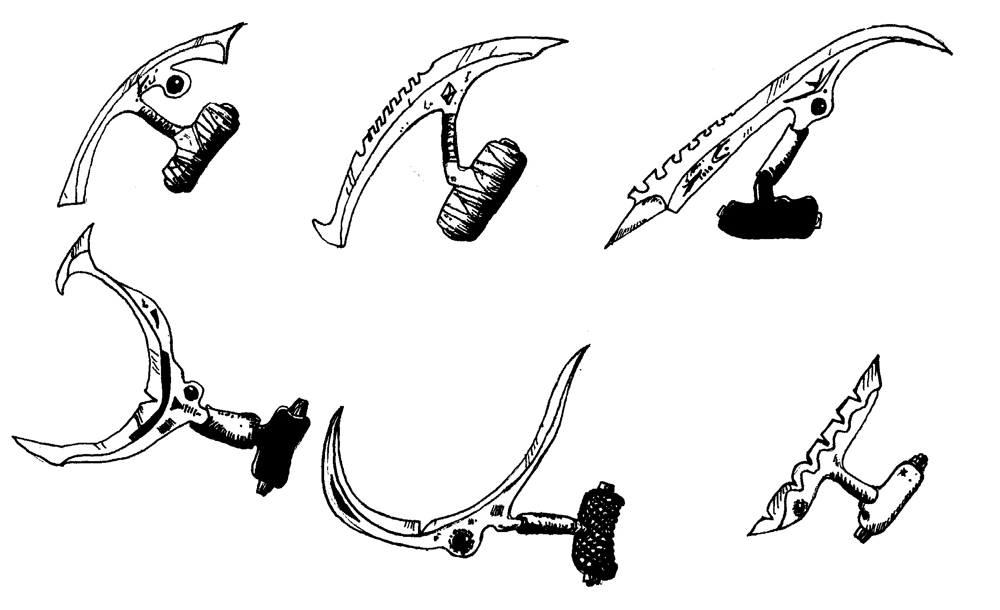
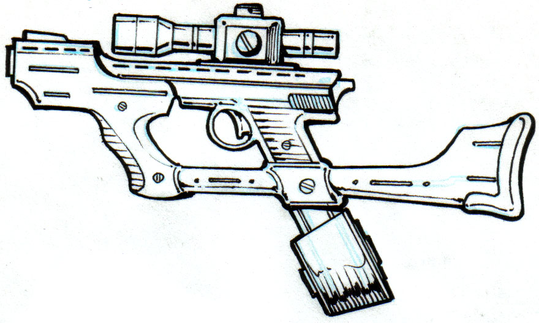
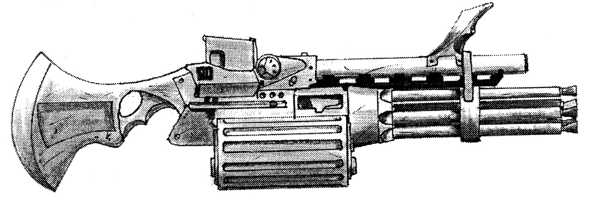
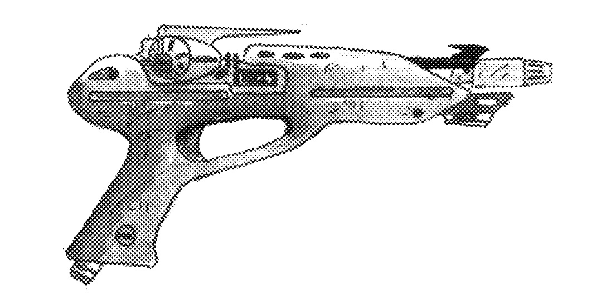
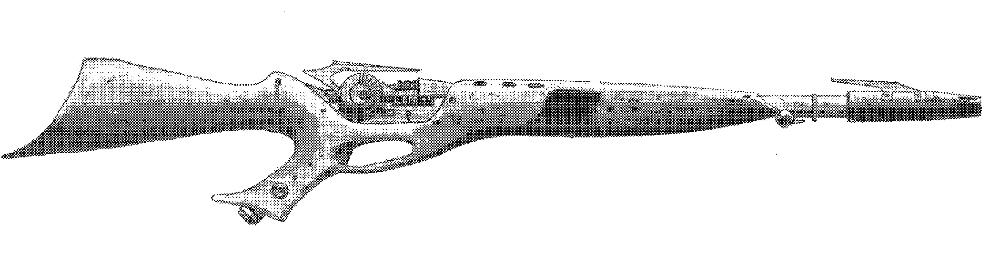
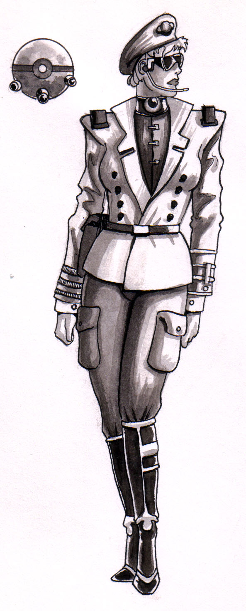

Blades
Garotte
Two rings connected by a microscopic wire, a garotte is wrapped around the victims neck and pulled taunt. This action cuts several major arteries and veins in the victim's' neck and the victim bleeds to death. The length and mass are 50 cm and 2g respectively.
Laser Sword
Shooting out an intense laser beam that mimics a blade it adjustable from 5 to 75 cm in length. The beam is activated by the small button in the palm of the weapon. The Dia. and mass are 5 cm and 190 grams. Bludgeons / Sonics
Banshee
Producing an extremely high pitched sound waves, the banshee uses compression of the gaseous molecules in the air to effect damage on a target. Burning Weapons
EE-99
The EE-99 is your basic flame-thrower except that this one is re-fillable by attaching a new fuel capsule to the front of the gun. The capsule can contain enough fuel to allow the user four; three second burns or one twenty second burn. At the rear of the gun is the air intake. The dimensions (LHW) and mass are 55265cm and 257 grams respectively.
Napalm pack
When the pack detonates it sprays a sticky liquid onto anything within a 5m of the pack. The liquid, when shot out of the pack, is on fire so anything covered by the liquid will suffer burns.

Explosives
Packs and Sharges (shape charges)
Concussion pac
This pack, when detonated, produces extremely high intensity sound waves. When these waves penetrate to the inner ear they cause erratic electrical impulses to the brain. When these impulses reach the hearing center of the brain the person collapses, into a deep sleep, for a short length of time. The numbers of minutes can be determined by taking one tenth of the persons CONSTITUTION (rounded up). This is the number of minutes that the person collapses for. The person will wake up with a huge headache and will not be fully conscience for several minutes. The dimensions (LHW) and mass are 306218cm and 540g respectively.
HED pac
Basically composed of a dry form of nitroglycerine and a detonator. The acronym H.E.D. stands for High Explosive Damage pack. This pack, when detonated, produces a very large explosion that will do a large amount of damage to any object close to the center of the explosion. The blast diameter of this weapon is 20 m. The pack is attached to the back by a strap. The detonator can be set for up to an hour count-down to detonation. The dimensions (LHW) and mass are 505025cm and 700g respectively.
ISO.CLN
A high explosive used in many type of caseless ammunition. Activated by a batch specific electric current, it is very stable and otherwise impossible to detonate.
Grenades
Concussion Grenade
This grenade makes a super loud bang that will knock a person unconscious. This grenade affects the inner ear, sending a signal, so strong to the brain, that it shuts off for a few minutes. The length of time the person is out is equal to a tenth of their constitution in seconds. The grenade is 9 cm in diameter and weighs 50 grams.
Fragmentation
This grenade is like the hed pack but this combines the high explosive with small pieces of metal that penetrate the target and cause multiple cuts in the flesh. When the grenade is detonated, the small pieces fly out of the grenade and spray into anything within 6 metres. There is a seven second delay to detonation. The spoon will stop the timer indefinitely until it is released. Once the spoon is released it drops off and cannot be replaced or used to stop the timer. The dimensions (Dia.H) and mass are 47cm and 50g respectively.
Glue
The glue grenade, when detonated, will spray the target and all objects around it with a extremely sticky liquid, that will harden to an almost unbreakable solid. When the solvent, purchased with the grenade, is opened the solvent forms a gas and degrades any glue within a five meters. The (Dia.H) and mass are 612cm and 70g respectively.
Incendiary
This grenade operates exactly as the napalm pack except that the napalm pack covers all objects in range with a sticky liquid. The incendiary grenade does not spray a sticky liquid, it uses a standard petroleum by-product. The grenade has a set detonation time of five seconds. The dimensions (Dia.H) and mass are 84cm and 55g respectively.
Sleep
This grenade effective range is 6 m and less if there is a stiff wind, since the sleep inducing gas will disperse more rapidly. The grenade has a countdown timer to detonation, adjustable from 3 seconds to 10 seconds. The dimensions (Dia.H) and mass are 513cm and 60g respectively.
Smoke
The grenade, filled with combustible material, burns when detonated giving off smoke. The are numerous colors available. There is a five second detonation delay timer. The (Dia.H) and mass are 68cm and 65g respectively. 11
Stick
These grenades are covered by a thin shell that is broken by hitting the grenade against a hard surface. Then struck once again to break open two small bags of nitroglycerin type compounds, which take four seconds to detonate after mixing. The explosion will affect an area about 10 m. in diameter. The dimensions (Dia.) and mass are 10 cm and 67 g respectively.
Photon and Particle Accelerators
Contour Laser
The contour laser is the most discreet weapon ever invented. It consists of a central module that creates the laser beam and a organo-polymer outer covering. The outer covering is formed into the shape of the interior of the users clenched fist, with the beam producing module embedded. With a full charge in its Batt it will fire 30 shots. Dimensions (LHW) and mass: 753cm and 160g respectively.
Wrist Laser
The latest in technology, this disposable weapon combines the strongest and lightest metals and materials, making it almost unnoticeable. The wearer may forget the weapon on if not paying attention. Most diplomats wear one just in case negotiations go sour, and defensive measures are in order. The WRIST LASER is compact and fits around the wearer's wrist, under a jacket or shirt sleeve. About 4 cm thick and worn on the forearm. It delivers 60 shots. The gun is fired by squeezing the hand into a fist consequently the weapon has no real sights, therefore it's hard to shoot accurately. The GM must roll on the random hit table to determine the affected area. Dimensions (LWH) and mass: 753cm and 200g respectively.
Pistols
Auto
An Auto pistol can shoot up to 5 shots per second. It is similar to the Gatling pistol but is a tenth of the mass and a fifth of length. The auto pistol has 40 shots per batt; 8 seconds of continuous firing. The Auto pistol is the standard sidearm of MASS The pistol is very thin, just 3 cm, so it is very easy to conceal. This gun is made of a hard material so it can be used as a hand held bludgeon. The dimensions (LHW) and mass are 30123cm and 205g respectively.

Gatling
The gatling pistol is constructed from TSteel. This, and the fact that it is large and bulky makes it the heaviest pistol ever made. This mass is a great disadvantage in hand to hand combat, however, this weapon can fire 10 shots per second, even though there is only one "lasing chamber". This puts it on an equal footing with weapons that shoot only one beam. The gatling pistol has five barrels that revolve into position for the lasing chamber to fire. If the barrels get out-of-sync. the lasing chamber will fire, hitting the body of the gun. This can be done by unscrewing the synchronous pin and moving the barrel and carriage a small distance to the left or the right, and screwing the pin back in. The gun will be destroyed if it is fired when the barrels are out of synchronization. This pistol has 100 shots per batt which allows 10 seconds of continuous firing. The dimensions (LHW) and mass are 402514cm and 530g respectively.

Laser
The laser pistol comes complete with a universal mount that will accept any one of the scopes that are in common use. This weapon like most pistols must be cocked by pulling the pin at the back of the gun back, but this motion is a symbolic one. The batt is inserted from the side of the gun and provides 30 shots. It, like the rifle, is totally sealed and waterproof to 4 atmospheres. This guns high power, great number of shots per batt, and lightness, are reasons why it is so very popular in the galaxy. The dimensions (LWH) and mass are 25715cm and 340g respectively.
Maser
The mazer pistol is constructed from the metal aluma-tung with a choice of materials for the hand grip. The clip in the mazer pistol fits in just under the barrel and just in front of the trigger. A mazer pistol is easily concealed and powerful so it often the choice of the average man who wants to defend himself. The pistol does the same kind of damage as the rifle but only half the area is affected. The dimensions (LHW) and mass are 20175cm and 390g respectively

Rifles
Maser
The MAZER can shoot ten shots at full power, and three shots that just serve to discharge excess energy from the batt. The excess energy can provide extremely intense light for a few minutes per shot. Heat will build up under an exoskeleton and finally cause it to explode (1.5 x damage). A mazer rifle or pistol has little no effect on any thing without water in it. Made out of different organo-polymers it is not a good idea to mistreat it. If used as a bludgeon there is a 75% chance that the rifle will shatter. The dimensions (LHW) and mass are 953218cm and 5500g respectively.
Nex
This weapon totally convertible to a pistol! The small lever, towards the front of the gun, just in front of the trigger will unlock the barrel converting the gun into a long handled pistol. Then there is the small backward facing clip on the top of the gun, just above the grip. When this is lifted the stock detaches and the conversion is complete. The power pack of this weapon is not a batt but a simple nickel-cadmium battery, thus the power yield of the pack was low, only providing enough power for four shots. The dimensions (as a rifle) (LHW) and mass are 68176cm and 289 grams respectively.

Plasma
This rifle shots a ball of plasma 8cm in diameter that adds enough energy to the chemical bonds in the target causing them to break, leaving base elements in a pile on the floor. This is a powerful weapon, but it only has five shots per canister and it takes five seconds for the barrel to cool enough for another shot to be fired. The gun is shown without the fuel canister. The dimensions (LHW) and mass are 952330cm and 5200g respectively.
Assault Rifles
Hip Mazer
The hip mazer is one of the larger weapons but the amount of the damage it does is worth the mass and bulk. The beam consists of microwaves that leave energy in the molecules of the target. This energy causes the molecules to vibrate and generate heat. Which causes any water to boil through the top layers of flesh, where they burst, causing extreme pain to the target. The hip mazer will cause one and one-half times as much damage on creatures with exoskeletons. Dimensions (LHW, including backpack) and mass: 1154528cm and 8200g respectively.
Fusion Rifle
Included in the design are the slits that cool the barrel and keep your hands from being burned. The small cone at the front of the gun is a flash suppressor that cuts the light emitted by the beam in half. The fusion rifle shoots a beam of high intensity matter in the plasma state. Unlike the plasma rifle, the fusion rifle does not have a kick, it shoots a beam 5cm in diameter. The fusion rifle's barrel does not get hot like the plasma Rifle . When the stock is not in use it slips up into the gun, making the rifle into a pistol. The dimensions (LHW) and mass are 953520cm and 5200g respectively.

Gid Rifle
The stock, made out of a thin bar, absorbs most of the force produced by the gun is one of the many standard features. The unique feature to a gid rifle is that it has double barrels which cuts the efficiency in half but, while doubling the power. The GID can fire two shots per second and is the standard weapon issued by MASS. This gun is shock-proof, waterproof and completely sealed to the 5 atmospheres. The beams are 10cm in diameter and do ten less damage points per 100 m over the maximum range of 600 m. The dimensions (LHW) and mass are 120cm and 6900g respectively.
Laser Rifle
L.A.S.E.R.( Light Amplification through Stimulated Emissions of Radiation) shoots a beam of light that is 1cm in diameter. This weapon has an extra large stock, because it can contain an assortment of small items. The laser rifle comes complete with a detachable bayonet that contains all the supplies included in a survival knife. The batt will deliver 20 shots before it will require a charge. The laser rifle is light, sealed from liquids up to a depth of 6 atmospheres, and is completely resistant from the elements. This weapon is made of hard organo-polymer and will not break under normal battle conditions which are decided by the G.M.The dimensions (LHW) and weight are 75357cm and 4200g respectively.
Auto-cannons
Plaser
A new principle -- that of the particle laser -- this gun produces a stream of highly charged ions suspended in a tight laser beam. Not only is it very effective on organic targets, this weapon can also fry any electronic circuits.
Particle Beam
Producing a beam of straight particles, the particle beam, is equally effective on both organic and inorganic targets.
Remote sentry
Sphere Gun
A sentry weapon that monitors a hall or room, a sphere gun will shoot at anything that moves or up to 10 pre-programmed targets. This gun can be customized to your own specific needs, the options follow. You can choose any one out of each category to customize your sphere gun.
SENSORS SETTINGS
1) wall mounted A) movement I) warning
2) floating B) heat II) stun
3) induct pods C) bio III) damage
MOVEMENT
A WALL MOUNTED SPHERE cannot move so it is usually used to guard a hallway or a single room. A FLOATING SPHERE can turn on the spot and guard four times the area as a stationary SPHERE. INDUCT PODS allow a SPHERE to move freely through rooms or halls in a building.
Sensors
MOVEMENT sensors lock onto anything that moves and fires at it.
HEAT sensors detect the infrared radiation emitted by something hot, and fire upon it.
BIO sensors use the aura around a living thing to aim and fire.
WARNING shots do only ten points of damage and are more of a joke than a threat.
STUN shots have a stunning effect on any living thing; while non-living objects become heated.
DAMAGE, is the most powerful and therefore does full damage to a body. The sphere gun is deactivated by its own encoded remote control. The remote works by sending a signal to the SPHERE which, when recognized, stops all offensive action. Any remote can be programmed to send a signal but to find the correct 9 digit sequence to deactivate the sphere gun will take time and skill. The sphere gun, is powered by a batt that will deliver 120 shots before it must be recharged.
Diameter and mass: 12cm and 315g respectively.

Projectiles
Pistols
L-15
This gun has its clip in the grip of the gun and was the standard pistol used in the late 21th century. The standard clip can hold 8 shells, and can fire then as fast as you pull the trigger. The dimensions (LHW) and mass are 20123.5cm and 172 grams respectively.
Mark V
The hand grip can be made out of a choice of materials that the buyer must specify or organo-polymer will be substituted. In the Mark V the rounds are fed backwards into the firing chamber, this is the secret to it's non jamming action. This pistols' standard clip will hold 20 bullets. A bigger clip holding 40 rounds is optional and banana or drum clips can be used in place of the usual clip, giving the Mark V a capacity of 80 rounds. The effective range is 250 m. This is the only pistol that a scope cannot be mounted on. The length and mass are 15 cm and 25 grams respectively.
Micro-missile Gun
This is one of the few weapons that is almost completely organo-polymer. These pistols can be stripped down to be hidden in different places, yet assembled very quickly when needed. This gun fires small missiles that are highly explosive. The missiles come in two varieties normal and guided. The normal missiles go straight at the target and if the target moves, after the missiles has been fired, the missile will miss. This type of missile does not take any time to lock on target but still does a lot of damage if it hits. The guided missile takes three seconds to lock on but after that the missile will follow the life signs it has locked into until it either hits the target or runs out of fuel. The latter occurs in about a half a hour. The micro-missile gun can shoot 5 rounds a minute as it is muzzle loader. The estimated effective range is 100 km. The top speed of the missile is 90 km/h. The microprocessor is linked to the sights of the gun so it can lock on to the right life-form. The sights are unique in that they can be adjusted to several modes, Including infrared, starlight-starbright, and bio-scanners. The scope is not mentioned in the scope description because it is only available for this weapon. The gun is liquid resistant to 4 atmospheres and shock-proof. The length and mass are 25cm and 50g respectively.
Mini Might
The mini might is a rather odd looking gun that is actually a pistol with an extended grip and barrel. This gun was designed to be used as a bludgeon as well as a functional pistol. Consequently this gun is extremely heavy for its' size. The whole gun is strengthened by small fibers that are introduced into the metal during smelting. This structural support allows a person to use the gun as a club without fear of bending the barrel. Even the firing mechanism was constructed to be more durable than the regular pistol. The dimensions (LHW) and mass are 55164.5cm and 172 grams respectively.
Multi Shot
This gun is like pistol sized shotgun gu1n. It has a selection of shell types bullet, ball, bead, and needle. All the shells are contained in organo-polymer cartridges that are wasted when the load is used. The bullet is a large metal slug that is made of lead, so it will expand and cause a good deal of damage when it enters the tissue, and upon its exit. The bullet is exactly like the cartridges for the shotguns of today except, this slug appears like a regular bullet for any other gun, except that the bullet has a much larger diameter. The ball comes in a variety of sizes which are made by pouring hot metal into cold oil. The bead cartridges shoot tiny beads of silica, which split upon impact, and introduce bio-toxins into the bloodstream. The needles can be laced with different types of neurotoxins that can cause death or paralyzation. The length and mass 30 cm and 40 grams respectively.
Sting Ray
This weapon is a completely silent and it is a semi-automatic pistol. The sting ray shoots bullets that dissolve when immersed in water. The sting ray is perfect for silent, sudden, and secret assassination. These weapons are issued to undercover officers of CCOP when they attempt to stop technological pollution. The sting ray comes with two clips, a 4 and 8 shot. The length and mass are 35cm and 55cm with arm rest and 140 grams respectively.
Rifles
Mark VII
The shoulder pad is very thick and soft because the gun has constant kick when it's firing in semi-auto mode. All you need to do is aim and pull the trigger as fast as you want the bullets to fly. The bullets being rather large allow only twenty to fit in a regular clip, however, there is the option of buying a banana clip that allows sixty bullets. A small clip holding ten bullets is also available. The length and mass are 105cm and 350 grams respectively.
Assault Rifles
Aran Rifle
This weapon is your standard military assault rifle of the twentieth century, light but strong, rapid firing but subtle. The stock is metal formed into a shock absorbing design that protects the marksman's arm while remaining light and strong. The gun can either be in full or semi-auto mode, or single shot. The built in handle can be replaced with a scope if desired. The standard clip can hold 60 shells and the optional banana clip will hold up to 120 shells. With a firing rate of 20 shells per second this gun can empty the standard clip in three seconds or the banana clip in 6 seconds. The dimensions (LHW) and mass are 67195.5cm and 390 grams respectively.
CX-J1
This rifle is a two handed weapon that is designed to be used at arms length. The position of both hand grips can change making this one of the most comfortable guns to shoot. While the standard clip holds 30 shells and the optional banana clip can contain up to 80, shells this weapon can spend these clips almost as quickly as the storm. With a firing rate of thirty shells per second this is the third fastest firing gun in use today. The dimensions (LHW) and mass are 75196cm and 315 grams respectively.
Nam
Like many other rifles it can be converted into a pistol When using this gun as a pistol in the full-auto mode you need to use the forward hand-grip, and the clip, to hold down the barrel. The shoulder pad is thick and the stock is spring loaded so almost no kick is felt by the marksman. The nam can only fire semi-auto or full-auto, set by a lever just above the clip. The regular clip holds 60s rounds and A banana clip can be bought that will hold 80 shells. In the full- auto mode the gun will fire twenty bullets a second, emptying the standard clip in three seconds. The length (as a rifle) and mass are 80cm and 400 grams respectively. The length (as a pistol) and mass are only 50 cm and 350 grams respectively.
Tri-X
Like the nexe and nam rifles this to can be converted to a pistol. This gun fires special bullets that expand just after they are shot and then when they impact the target they expand again causing the same damage as ballistic rounds. The regular clip holds 15 of these bullets, a 25 bullet banana clip is available. The length and mass are 60cm and 220 grams respectively.
Shotguns
4.2 Hector
This weapon is almost entirely made of aluma-tung it is lightweight and very durable. A 4.2 gauge shotgun, hence the name 4.2 Hector, It is a distant relative of the 12 and 20 gauge shotguns of the 20th century. The 4.2 Hector fires shells that are similar, except in size, to those described under multi shot but, the 4.2 Hector can hold six shells in two under the barrel clips. These are reloaded by feeding one shell at a time, and the gun is cocked by moving the forward hand grip in a back-and-forth motion once. The length and mass are 70 cm and 400 grams respectively.
Machine guns
Hand Vulcan
This is a multiple barreled weapon that can fire off 55 rounds per minute yet, takes up the space of a pistol. The hand vulcan is a double handed pistol that uses one firing chamber but five barrels to fire its bullets. The regular clip holds 100 shells while the banana clip holds up to 200 shells. Thus the hand vulcan can empty the standard clip in four seconds and the banana clip in eight seconds. The dimensions (LHW) and mass are 312511cm and 278 grams respectively.
HVLCMG - "storm"
The word STORM, suggested by one of the manufactures, is easier handle then the acronym HVLCMG. The stock is made from a type of foam the is specially designed to take lots of force. The STORM shoots one hundred bullets per second making it the fastest firing machine gun. Belts that hold these bullets are bought in groups of fifties and can be joined. This gun also features a self leveling bipod. The dimensions (LHW) and mass are 150cm and 2500 grams respectively.
SM-38
The SM series of weapons (38, 44, 48, 90) are manufactured exclusively by Acad Terra as 'small self defense weapons', but it is painfully apparent that they are more offensive. Because this is a sub-machine gun it has only a fraction of the kick of a large Machine Gun. With a length of 25cm and a mass of 185 grams respectively this series is an excellent choice for most of the hired guards and killers. Roll Gun The roll gun is constructed of multi-loy to make it a durable and tough field weapon and standard issue to the guards of MASS and ITAG. The roll gun can shoot 40 rounds per second. The clip is large enough to hold 120 bullets allowing 3 seconds of continuous firing. The dimensions (LHW) and mass are 30 cm and 1.2 kg respectively.
Artillery
Bazooka
A bazooka shoots at high speed a projectile that could either be an Armour piercing, or a explosive shell, and can have any kind of a scope mounted making it more accurate. The back blast of the fired shell shoots out the rear of the tube. A small amount of the back-blast fills a cushion to soften the slight force when the shell leaves the barrel. The dimensions (LHW) and weight are 180cm and 1250g without shell, 1750g with shell.
Grenade Gun
The forward ring is a guide for the grenade as it leaves the firing chamber. This pistol is like the grenade launcher but it is pistol size. This pistol can shoot the following grenades; armor piercing, fragmentation, sleep, incendiary, concussion, and smoke. grenades must be bought especially for the grenade gun and they are loaded into the muzzle. The grenade gun is loaded by moving the barrel one hundred-eighty degrees to the barrel cocking the spring mechanism. The grenade of your choice is pushed in and the grenade gun is ready to fire. The length and mass are 30 cm and 50 grams respectively
Grenade Launcher
This weapon can "THROW" a grenade further then a person can lob it, by storing energy in a spring and then using that energy to launch the grenade. The grenades that are used must be special grenades made for the grenade launcher. The grenade launchers' spring is set by pushing the stock down at 90 degrees to the barrel, and the stock is made of multi- loy. The dimensions (LHW) and weight are 70206cm and 200g respectively.
Mortar
This weapon is self leveling, and it uses a laser range finder to set all the adjustments. All you do is load the shells and let them go down the barrel. When the shell hits the pin it detonates and flies out the barrel to the target. With the bipod folded back against the weapon the handle on top is perfectly balanced in the center of the gun. This weapon shoots special grenades that could contain any one of your choice of two different loads. These are the fragmentation shell, or white phosphorous. The mortar is made of a courant barrel and pressure plate of multi-loy. The dimensions (LHW) and weight are 70 cm and 2000g respectively.
Stunners
Pistols
Conk Gun
This gun shoots bullets that expand 4 fold their original surface area, and when delivered the bullet causes the victim to fall unconscious. There are 4 bullets in the clip and the gun is semi-automatic. The dimensions (LHW) and weight are 30137cm and 90g respectively.
Screamer
Producing extremely loud sound waves the target simply collapses due to the pain. The stun will last for 1:10sd minutes, and only characters will high mental control will be able to move during this period.
STaser
A STaser produces a very high voltage spike that temporarily paralyzes muscles, with the massive electric discharge.
Rifles
Electra Gun
The electra gun attaches itself to the target by shooting out a metallic net. A current is then passed through a long wire to the net and through the target, leaving the target unable to move. The batt will last for 10 shots each being 2 minutes long. The net is packaged in the front compartment that detaches from the gun when fired. The dimensions (LHW) and weight are 45228cm and 90g respectively.
Paralysis Rod
The rod expands out of the shank of the weapon and then delivers a shock to the target. Which stuns the targets' nervous system for 1:10sd minutes. The dimensions (LHW) and weight are 15cm when not extended or 150cm with the rod extended and 90g respectively.
Stun Gun
This gun exudes a cloud of stunning gas with an effective range of five emter and less if the wind is blowing. The dimensions (LHW) and weight are 372015cm and 50g respectively.
Stun Rifle
This rifle can shoots a large number of pellets, each filled with a highly reactive chemical that which ignites upon contact to air and produces sonic waves. Used for crowd control because it can effect as many as fifty people at one time. The dimensions (LHW) and weight are 522513cm and 75g respectively.
Stun Pack
This pack emits high pitch sound waves that will knock a person out if the target can hear them. It has a effective range of 10 m. The personnel of MASS use these for large crowd control. The detonation time is 5 seconds. The officer should have ear shields in place before throwing the pack. The dimensions (LHW) and weight are 15105cm and 750g respectively.
Scopes
Optical Scopes
These simply magnify the image so the marksman has a better chance of hitting the target. Weapons must be sighted within one range, usually one hundred meters. Then the marksman is free to adjust how high or low he aims depending on the distance to the target. Obviously, even a skilled marksman could misaim and his shot go awry. By compensating for the distance to the target, correctly, the marksman can achieve a direct hit.
Ultrasonic Range Finding Scopes
Each scope, of this type, has a sound emitter that reflects off, and returns the distance of the target. Then the microprocessor calculates, and sets, the Elevation and Windage on a optical scope. These automatic adjustments allow the the marksman to aim directly where he wishes to shoot. This scope eliminates, inaccurate and sometimes incorrect, manual 17 compensation for the range. Even after all of these adjustments, if the marksman moves or if the target does, the shot will go awry. This scope is accurate but it cannot compensate for the marksman's or target's actions.
Microprocessor Controlled Scopes
These have a microprocessor that analyzes the image in the scope and calculate its distance and speed. Then the sights are set, but unlike the final adjustments of the ultrasonic range finding scopes these sights are continually re-set about one-hundred times a second. This scope also compensates for how the marksman miss-aims or improperly fires the gun. The ultimate in scopes, it can never miss unless the gun is jolted or the target stops suddenly. This type of scope is very sensitive to bumps and jolts that will throw out it's calibration. To determine whether a scope is calibrated or not just use your common sense. Keep in mind that dropping a weapon, with one of these scopes attached, would throw out its calibration. If an un-calibrated scope is used, then the GM must roll on a Random Hit Table to determine where the shot hits.